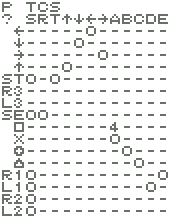
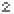
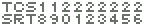
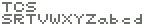

キーコンフィグ中の操作
| ←↓→↑ | カーソル移動 |
| SELECT | 約0.75秒間押すと、 設定を保存してキーコンフィグ終了 ※列表示・OSD位置は除く |
| □ | 列表示変更 |
| × | 設定変更 |
| L1+△ R1+△ | OSD左右移動 |
| L1L2R1R2+△ | 設定をデフォルトに戻す |
デフォルト設定
|  |
設定表示
| TEST | TEST以外 | |
| 対応なし | 対応なし | |
| 対応あり | 対応あり | |
|  | 対応あり | 対応あり、1/2シンクロ連射 |
| 対応あり | 対応あり、1/4シンクロ連射 |
行表示（コントローラー側）
| START | |
| SELECT | |
| 右スティックのボタン ※ANALOGランプ点灯時に有効 | |
| 左スティックのボタン ※ANALOGランプ点灯時に有効 | |
| 表示どおりのボタンに対応 |
列表示（ゲーム基板側）
| ボタン名 | |
|  | JAMMA端子（1P側） |
|  | JAMMA端子（2P側） |
|
※は、左からTEST・CREDIT・START ※TESTは設定したすべてのボタンを押したときに有効 ※CREDITはボタンを離したときに有効 |